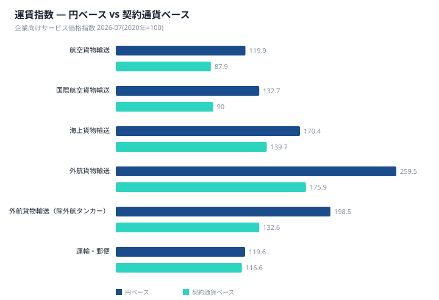
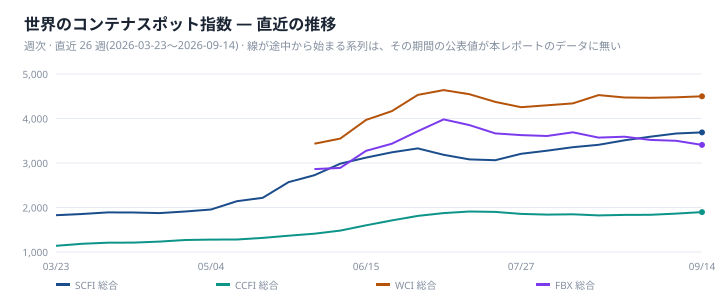
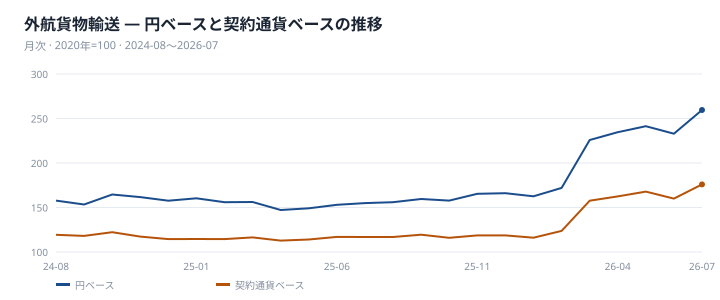
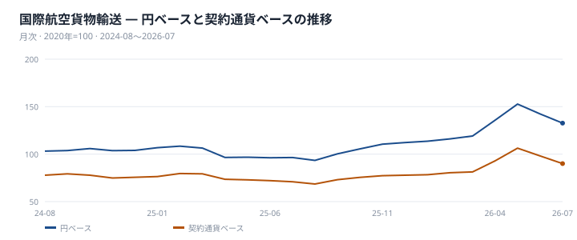
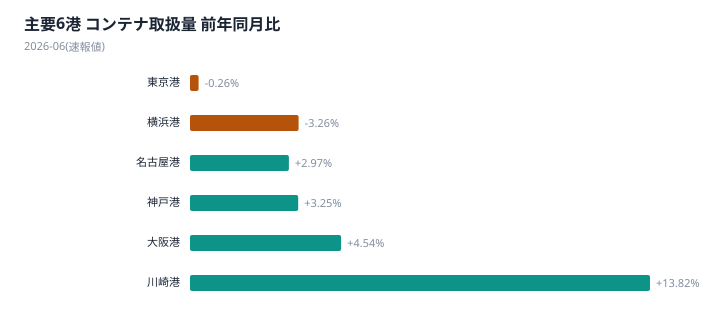
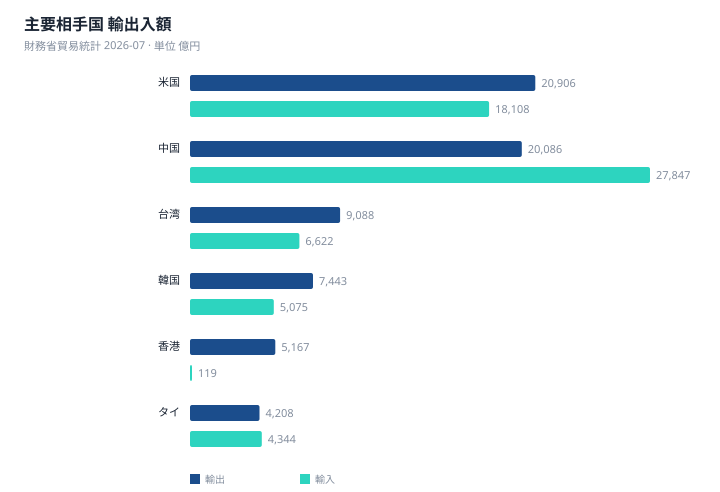

本号は軸ごとに基準月が異なる。企業向けサービス価格指数と貿易統計は2026年7月分、港湾統計(速報値)は2026年6月分である。この違いを踏まえたうえで、今月の骨格は運賃の「契約通貨」の違いにある。外貨建て契約が中心の国際系列と、円建て契約が中心の国内系列とで、伸びの向きと大きさが分かれている。
世界のコンテナスポット指数は2026年9月14日時点で方向が割れている。CCFI総合は1897.15で前週比+1.88%と上昇した一方、WCI総合4500(同▲1%)、FBX総合3407.4(同▲2.61%)はいずれも下落し、直近の変化率が判明している3系列のうち上昇は1系列にとどまる。
日本国内の指数に目を移すと、外航貨物輸送は円ベース259.5(前年同月比+67.4%)、契約通貨ベース175.9(同+50.5%)で、円ベース指数は契約通貨ベース指数を47.5%上回っている。前年同月比で見た為替換算による上乗せ率は+11.3%である。一方、円建て契約が中心の国内航空貨物輸送は円ベース81.5(同▲5.9%)にとどまり、外航貨物輸送とは伸びの水準も方向も大きく異なる。両者の差は運賃そのものの動きではなく、契約通貨が外貨建てか円建てかによるものである。外貨建て契約の系列には円安の影響がそのまま指数に反映されるのに対し、円建て契約の系列にはその影響が及ばない。
契約通貨ベースで見ると、航空貨物輸送は87.9、国際航空貨物輸送は90と、いずれも基準年(2020年=100)を下回る水準にとどまる。これに対応する円ベースはそれぞれ119.9、132.7であり、契約通貨ベースの落ち込みが円ベースでは覆い隠されている格好である。国際の運賃系列だけが大きく伸びて見えるのは、運賃そのものの上昇に加えて為替換算の影響が重なっているためである。
物量面では、主要6港の外国貿易コンテナ取扱量(速報値)は合計119万5224TEU(前年同月比+1.0%)で、輸出59万7388TEU・輸入59万7836TEUとほぼ拮抗している。貿易統計は輸出115094億円(同+23.2%)、輸入121477億円(同+27.9%)で、貿易収支は▲6383億円だった。運賃指数の大きな伸びに比べ、港湾の取扱量や貿易額の伸びは相対的に緩やかである。
世界のスポット指数は週次で直近まで公表されるのに対し、日本の企業向けサービス価格指数は月次で、当月分の公表までに約2か月かかる。直近のスポットの動きは、まだ公表されていない日本の指数がどちらを向くかを考える材料になる。ただし転嫁の幅と時期は契約条件によって異なり、データからは特定できない。次回以降は、CCFI・WCI・FBXの方向が揃うか、外航貨物輸送の契約通貨ベースがどう推移するかを確認したい。

世界のコンテナスポット指数は2026年9月14日時点で方向が割れている。CCFI総合は1897.15で前週比+1.88%と上昇した一方、WCI総合は4500(同▲1%)、FBX総合は3407.4(同▲2.61%)はいずれも下落し、直近の変化率が判明している3系列のうち上昇は1系列にとどまる。SCFI総合は3688で、航路別では上海→欧州3683、上海→米西岸7560、上海→米東岸10579という水準にある。米東岸向けが米西岸向けを上回る水準にあることも合わせて確認できる。
日本銀行の企業向けサービス価格指数(2026年7月分、2020年=100)によると、外航貨物輸送は円ベース259.5、契約通貨ベース175.9である。前年同月比は円ベース+67.4%、契約通貨ベース+50.5%で、円ベースには為替換算による上乗せ分+11.3%が含まれる。基準年からの累積でみると、円ベース指数は契約通貨ベース指数を47.5%上回っている。外航貨物輸送から外航タンカーを除いた系列は円ベース198.5、契約通貨ベース132.6、前年同月比は円ベース+24.5%、契約通貨ベース+12.7%、為替換算による上乗せ分は+10.5%、基準年からの累積での指数の比は49.7%である。契約通貨ベースの指数自体が両系列とも基準年の100を上回っており、為替を除いた運賃水準の上昇も確認できる。
外航貨物輸送の親系列にあたる海上貨物輸送は円ベース170.4、契約通貨ベース139.7、前年同月比は円ベース+31.8%、契約通貨ベース+21.3%、為替換算による上乗せ分は+8.7%である。
世界のスポット指数は2026年9月14日時点まで週次で公表される一方、日本の外航運賃指数は2026年7月分までの月次公表であり、両者の基準日は揃わない。CCFIが上昇、WCI・FBXが下落という世界の分岐局面と同時期に、日本の外航運賃は円ベース・契約通貨ベースともに前年同月比で大きく伸びている。これは同時に観測された事実である。日本の指数は7月分までの公表であり、以降の動きは次回以降の公表で確認することになる。
内航貨物輸送は円ベース138.8(2020年=100)、前年同月比+7.2%で、外航に比べ伸びは小さい。バルク市況を示すBDIは3367、燃料油はVLSFOが972、HSFOが800だった(いずれも2026年9月14日時点)。
供給面では、Drewryが集計する主要East-West航路(アジア〜欧州・太平洋・大西洋)の欠航便数は、2026年9月18日公表分で77便、計画720便に対する欠航率は10.7%だった。公表された直近6回のうち、9月18日(10.7%)と9月11日(11%)の欠航率が最も高く、7月31日の58便(8%)、8月21日の49便(6%)、8月28日の45便(6%)、9月4日の47便(6.4%)はいずれもそれより低い水準である。この便数は日本発着に限ったものではなく、東西基幹航路全体の値である。
日本発の荷動きをみると、日本海事センターの北米航路(2026年7月、往航、アジア→米国)で日本発は6万189TEU(前年同月比▲8.6%)。同じ航路で中国発は103万1626TEU(▲0.4%)、韓国発は11万7396TEU(▲3.2%)、台湾発は4万9776TEU(▲18.6%)、ベトナム発は31万8870TEU(+1.3%)で、日本発の落ち込みは台湾に次いで大きい。18ヶ国・地域合計は200万8373TEU(▲1.2%)だった。欧州航路(2026年6月、往航、アジア→欧州)は北米航路と異なり国別ではなく地域別の公表で、日本単独の数字はなく日本は北東アジアに含まれる。北東アジア計は13万5393TEU(▲6.2%)と減少した一方、中華地域計は152万5758TEU(+20.9%)、東南アジア計は23万4142TEU(+8.1%)、アジア合計は189万5293TEU(+16.8%)といずれも増加しており、北東アジア計の減少とは対照的な動きとなった。この航路別の荷動き量は日本の港湾統計のTEUとは母集団が異なる。


航空貨物輸送は円ベース119.9、契約通貨ベース87.9で、契約通貨ベースは基準年(2020年=100)を下回る水準にとどまる。このうち国際航空貨物輸送は円ベース132.7、契約通貨ベース90で、契約通貨ベースはこちらも基準年を下回る。前年同月比を見ると円ベースは+37.7%、契約通貨ベースは+26.9%とどちらも増加しているが、伸び幅には開きがある。為替換算による上乗せ率は前年同月比ベースで+8.4%、基準年からの累積で見た指数の比では+47.4%であり、円ベースの高い伸びには為替換算の影響が相応に反映されている。契約通貨ベースの水準自体が基準年を下回っている点は、運賃そのものの水準としては抑制的であることを示す。
国内航空貨物輸送は円ベース81.5で、前年同月比は▲5.9%と減少した。国際航空貨物輸送の円ベースが+37.7%だったのに対し、国内航空貨物輸送は減少に転じており、国際線と国内線で方向が分かれている。国内航空貨物輸送については契約通貨ベースの数値は示されておらず、円ベースのみでの評価となる。なお、航空貨物のスポット運賃指数は本レポートのデータには無い。

ユーラシア鉄道アライアンス指数(ERAI)は中国と欧州を結ぶ鉄道運賃を示す指数であり、日本発着の航路を対象とするものではない。アジア-欧州間の代替ルートとして参照する位置づけである。2026年8月1日時点のERAI総合は3912で、前月比+0.23%とわずかに上昇した。一方、方向別では西航(中国→欧州)が4082で前月比▲0.05%、東航(欧州→中国)が2603で前月比▲0.23%となり、総合の上昇とは対照的に両方向とも下落している。平均輸送日数は2026年9月1日時点で7.06日と公表されており、これは運賃とは別の指標である。ERAIの変化率はいずれも前月比であり、前年同月比とは異なる点に注意が必要だ。
日本銀行の企業向けサービス価格指数によると、2026年7月分の陸上貨物輸送は112.9で前年同月比+4.6%となった。同じ水準の道路貨物輸送も112.9(同+4.5%)と、陸上貨物輸送とほぼ並ぶ伸びを示している。これに対し鉄道貨物輸送は107.0で前年同月比+0.4%にとどまり、陸上貨物輸送・道路貨物輸送の伸びを下回った。陸上輸送の中でも輸送手段によって伸びの大きさが分かれた形である。
| 港湾 | 合計 (TEU) | 輸出 | 輸入 | 前年同月比 |
|---|---|---|---|---|
| 主要6港 合計 | 1,195,224 | 597,388 | 597,836 | +1.0% |
| 東京港 | 367,548 | 169,691 | 197,857 | ▲0.3% |
| 横浜港 | 237,138 | 125,753 | 111,385 | ▲3.3% |
| 名古屋港 | 221,046 | 115,220 | 105,826 | +3.0% |
| 神戸港 | 182,451 | 98,919 | 83,532 | +3.3% |
| 大阪港 | 179,474 | 83,668 | 95,806 | +4.5% |
| 川崎港 | 7,567 | 4,137 | 3,430 | +13.8% |
※ 2026-06 分(速報値 — 確報とは確定度が異なる)。外国貿易コンテナ。合計は主要6港の合計であり全国計ではない。出典: 国土交通省 港湾統計。
主要6港の外国貿易コンテナ取扱量(速報値)は2026年6月分で合計119万5224TEU、前年同月比は+1.0%だった。輸出59万7388TEU、輸入59万7836TEUとほぼ拮抗している。この値は速報値であり、確報とは確定度が異なる点に留意する必要がある。企業向けサービス価格指数や貿易統計が2026年7月分であるのに対し、港湾統計は2026年6月分であり、対象月が1か月ずれている。なお、この合計は主要6港の合計であって、全国計ではない。
港別では、名古屋港22万1046TEU(+3.0%)、神戸港18万2451TEU(+3.3%)、大阪港17万9474TEU(+4.5%)、川崎港7567TEU(+13.8%)の4港が前年同月を上回った。一方、取扱量が最大の東京港は36万7548TEU(▲0.3%)、横浜港は23万7138TEU(▲3.3%)といずれも減少し、6港は増加4港・減少2港に分かれた。伸び率では、取扱量規模が最小の川崎港が6港のうち最も大きい伸びを示した一方、横浜港は6港のうち最も大きい落ち込みとなった。取扱量の規模と伸び率の顔ぶれは一致していない。
企業向けサービス価格指数(2026年7月分)のうち、運輸・郵便に含まれる港湾運送は105.1(前年同月比+0.8%)、倉庫は105.6(同+2.1%)だった。いずれも基準年(2020年=100)を上回る水準にあり、伸び率は倉庫が港湾運送を上回っている。両系列とも円ベースの数値であり、05-1・05-2で見た物量(TEU)の増減とは別の指標である。

| 相手国 | 輸出 (億円) | 前年同月比 | 輸入 (億円) | 前年同月比 | 収支 (億円) |
|---|---|---|---|---|---|
| 総額 | 115,094 | +23.2% | 121,477 | +27.9% | ▲6,383 |
| 米国 | 20,906 | +22.0% | 18,108 | +58.0% | 2,799 |
| 中国 | 20,086 | +25.8% | 27,847 | +26.2% | ▲7,761 |
| 台湾 | 9,088 | +43.4% | 6,622 | +65.9% | 2,466 |
| 韓国 | 7,443 | +31.2% | 5,075 | +28.8% | 2,368 |
| 香港 | 5,167 | ▲7.9% | 119 | +10.6% | 5,048 |
| タイ | 4,208 | +11.4% | 4,344 | +28.1% | ▲136 |
| シンガポール | 3,907 | +48.8% | 1,458 | +58.9% | 2,449 |
| ベトナム | 2,981 | +26.3% | 5,222 | +35.7% | ▲2,241 |
| インド | 2,849 | +12.5% | 1,269 | +64.6% | 1,580 |
| オーストラリア | 2,753 | +45.0% | 7,257 | +27.0% | ▲4,504 |
※ 2026-07 分。輸出上位10か国。地域集計は除く。出典: 財務省貿易統計。
| 輸出品目 | 金額 (億円) | 構成比 | 輸入品目 | 金額 (億円) | 構成比 |
|---|---|---|---|---|---|
| 機械類及び輸送用機器 | 66,047 | 57.4% | 機械類及び輸送用機器 | 37,742 | 31.1% |
| 特殊取扱品 | 13,833 | 12.0% | 鉱物性燃料 | 26,804 | 22.1% |
| 原料別製品 | 11,905 | 10.3% | 化学製品 | 13,038 | 10.7% |
| 化学製品 | 11,805 | 10.3% | 雑製品 | 12,860 | 10.6% |
| 雑製品 | 6,003 | 5.2% | 原料別製品 | 10,477 | 8.6% |
| 鉱物性燃料 | 2,236 | 1.9% | 食料品及び動物 | 8,549 | 7.0% |
| 原材料 | 1,956 | 1.7% | 原材料 | 8,180 | 6.7% |
| 食料品及び動物 | 1,019 | 0.9% | 特殊取扱品 | 2,411 | 2.0% |
| 飲料及びたばこ | 242 | 0.2% | 飲料及びたばこ | 1,054 | 0.9% |
| 動植物性油脂 | 49 | 0.0% | 動植物性油脂 | 362 | 0.3% |
※ 2026-07 分。概況品目の大分類10品目。出典: 財務省貿易統計 概況品別国別表。
貿易統計の2026年7月分によると、輸出は115094億円(前年同月比+23.2%)、輸入は121477億円(同+27.9%)で、貿易収支は▲6383億円だった。ファクトシートにある国のうち輸出額が最も大きいのは米国の20906億円、次いで中国の20086億円である。両国は金額規模で他を引き離すが、伸び率で見ると米国は+22.0%にとどまり、シンガポールの+48.8%やオーストラリアの+45.0%、台湾の+43.4%を下回る。輸出上位国と伸び率上位国は一致しない。
輸入では台湾が+65.9%、インドが+64.6%、米国が+58.0%と高い伸びを示した国が並ぶ一方、ドイツは▲3.6%と唯一のマイナスだった。輸出でも香港が▲7.9%とファクトシートにある国の中で唯一減少している。収支面では香港が5048億円の黒字でファクトシートにある国のうち最大、中国が▲7761億円の赤字で最大となっており、黒字国と赤字国の顔ぶれもはっきり分かれている。
品目別では、輸出は機械類及び輸送用機器が構成比57.4%(66047億円)で最大となり、特殊取扱品の12.0%(13833億円)、原料別製品の10.3%(11905億円)、化学製品の10.3%(11805億円)が続く。輸入も機械類及び輸送用機器が31.1%(37742億円)で最大だが、輸出に比べると構成比の水準は低い。輸入では鉱物性燃料が22.1%(26804億円)で2位に入り、輸出における鉱物性燃料の構成比1.9%(2236億円)とは対照的な位置にある。
構成比の大小は各品目が金額全体に占める割合を示すものであり、前年同月比の伸びとは別のデータである。輸出入とも上位品目の顔ぶれには重なりがあるが、鉱物性燃料のように輸出入で構成比の水準が大きく異なる品目もある。

来月の焦点は、世界のコンテナスポット市況が日本の企業向けサービス価格指数にどう表れるかである。CCFI総合は前週比+1.88%と上昇したが、WCI総合は同▲1%、FBX総合は同▲2.61%と下落しており、直近の方向は一致していない。一方、日本の企業向けサービス価格指数は2026年7月分までの公表であり、9月時点のスポット市況の動きはまだ反映されていない。世界のスポット指数が週次で直近まで公表されるのに対し、日本の指数は月次で約2か月遅れて公表されるため、今後の公表でどちらの方向に振れるかを確認する材料として今回のスポット動向を位置づけられる。ただし転嫁の幅と時期は契約条件によって異なり、データからは特定できない。
自社の契約で試算する — 本レポートは市場全体の指数を扱う。自社の契約時点と現在を入れて、値上げのうち運賃要因と為替要因を分けて出す道具を 物流費ベンチマーク に用意している。